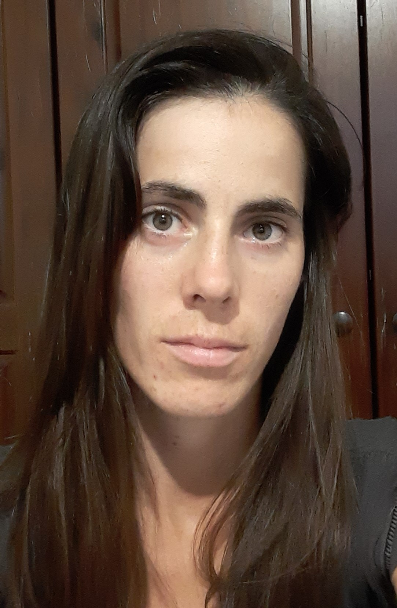

Estibaliz Barreneche

Summary
Accounting Administrative Assistant, currently learning Web Development.
Courses
- The Complete 2023 Web Development Bootcamp, currently learning
- Web Development - Coderhouse February 2023
Work Experience
Accounting Administrative Assistant
-
Dirección Nacional de Sanidad de las Fuerzas Armadas
-
Dirección General de Atención Periférica
Oct. 2021 - March 2023
-
Performed administrative duties such as word processing and data
entry.
- Used accounting software to prepare financial reports.
- Supported CEO by managing budgets.
- Managed phone and email correspondance.
-
Centro de Atención Periférica N°2
Apr. 2019 - Oct. 2021
- Drafted correspondance and CEO's documents.
-
Transcribed and organized information and prepared Word
documentations.
- Managed phone and email correspondance.
Skills
| Spanish |
🌟🌟🌟🌟🌟 |
GIT |
🌟🌟🌟 |
| English |
🌟🌟🌟 |
GitHub |
🌟🌟🌟 |
| HTML |
🌟🌟🌟 |
CSS |
🌟🌟 |
| Microsoft Office |
🌟🌟🌟 |
German |
🌟🌟 |
Other skills
- Organization
- Problem solving
- Work in group
Certifications
- Web Development - Coderhouse (Feb. 2023)
- B2 Firts - Cambridge University Press & Assessment - Dec. 2022
- Operador Microsoft Office - Jul. 2018
Contact Me